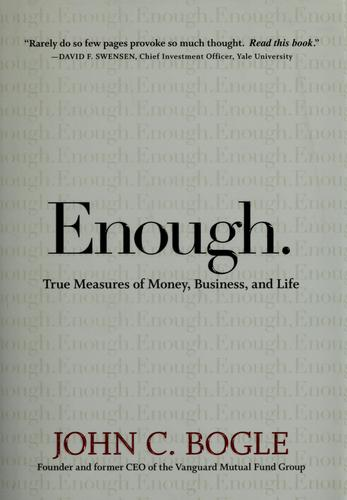

2005年5月，作家库尔特·冯内古特（Kurt Vonnegut）把一首诗投给《纽约客》，讲述他和老友约瑟夫·海勒（Joseph Heller）在长岛谢尔特岛一场派对上的对话：派对主人是一位对冲基金经理，冯内古特告诉海勒，这位主人一天挣的钱就超过海勒那本畅销数十年的小说《第22条军规》全部版税收入的总和；海勒回答："是的，但我拥有一样他永远不会有的东西……足够。"（"Yes, but I have something he will never have . . . Enough."）2007年5月，先锋集团（Vanguard）创始人约翰·博格在乔治城大学麦克多诺商学院的毕业典礼演讲上讲了这个故事，用它做题目和框架，一年后扩展成《足够：约翰·博格的金钱、商业、人生准则》一书，2008年由约翰·威利父子出版社（John Wiley & Sons）首次出版，后来的版本加入了美国前总统比尔·克林顿撰写的序言。
博格1974年创立先锋集团，1976年推出面向个人投资者的首只指数共同基金。这本书把他几十年间面向职业团体和大学生的演讲整理成三个部分、十组"太多"与"不够"的对照。"金钱"部分依次讨论成本太多而价值不够、投机太多而投资不够、复杂太多而简单不够；"商业"部分讨论计算与信任、商业行为与专业操守、推销与受托责任、管理与领导；"人生"部分则对照物质与承诺、二十一世纪价值观与十八世纪价值观、外在成功与内在品格。章节安排把同一个问题从基金费率推到公司治理，再推到个人生活：当可以计数的资产规模、季度业绩和薪酬占据全部注意力时，难以计数的信任、责任和声誉会被挤出决策。
2008年原版出版时，全球金融危机正在暴露金融机构把销售收入私有化、把失败成本转给客户和社会的问题。博格用共同基金行业说明这种代理冲突：投资者得到的是市场回报减去费用，基金公司却会因资产规模增长而持续增加管理费；产品越复杂、交易越频繁，销售者越容易收费，客户留下的复利反而越少。他把股票长期回报拆成股息收益与企业盈利增长，把市盈率变化带来的涨跌归为投机成分；前两项来自企业创造价值，后一项取决于别人愿意支付什么价格。因此他主张回到低成本、长期持有和受托人标准。耶鲁大学首席投资官戴维·斯文森（David F. Swensen）的封面评语是："Rarely do so few pages provoke so much thought. Read this book."2010年修订版增加了美国前总统比尔·克林顿的序言。中信出版集团2021年出版简体中文版《足够：约翰·博格的金钱、商业、人生准则》，由高源翻译。
博格写这本书时，距离1996年的心脏移植手术已过去十余年。他没有否定赚钱或企业增长，而是要求先回答增长服务于谁：先锋的共同所有权结构让基金持有人间接拥有管理公司，降低费用与客户利益可以放在同一方向；传统基金公司的外部股东则要求管理公司提高利润，客户利益与公司利润之间天然存在张力。书中从海勒那句"足够"出发，最后落在职业品格上——一个人若只用净资产衡量成功，便会忽略时间、家庭、承诺和公共责任。它给投资者的操作结论很具体：少付费用、少做交易、少买不理解的复杂产品；给管理者的问题则更难，因为信任和受托责任无法像季度收入那样立刻出现在报表上。